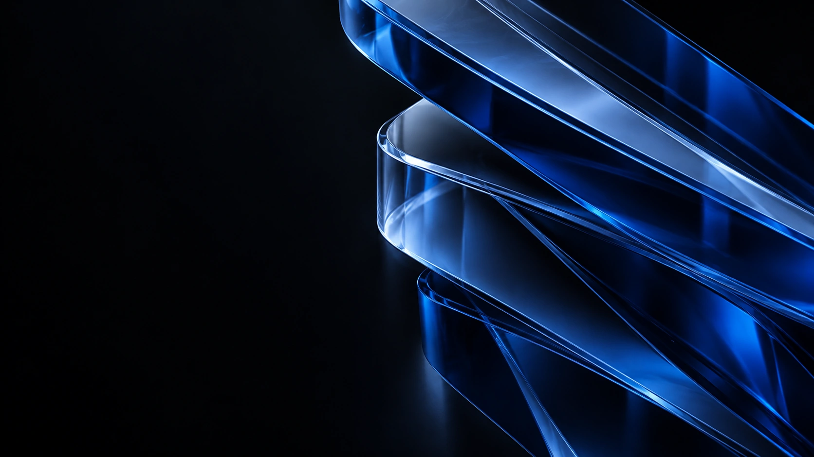

Quick Notes
TODAY / PERSONAL NOTEMake room for
 Keep one clear priority.Leave a little space to think.
Keep one clear priority.Leave a little space to think. Take the next small step.
Take the next small step.
Make room for
what matters.
작은 생각 하나가 다음 작업의 시작이 됩니다.
Quick Notes
흐름을 끊지 않고 생각을 남기는 작은 메모 공간.
검색부터 실행까지, 흩어진 작업을 한곳에.
당신의 하루에 맞춘 새로운 데스크톱 런처.
검색창 하나에서, 필요한 작업으로.
파일과 작업을 검색하고, 목록에서 하나를 선택해 보세요.
작은 움직임으로,
하루의 흐름을 이어갑니다.
하나를 눌러, 다음 작업을 바로 열어보세요.
지금 하는 일에 맞춰,
필요한 도구를 가까이 둡니다.
떠오른 생각은 붙잡고, 필요한 순간에는 집중합니다.
작은 생각 하나가 다음 작업의 시작이 됩니다.
흐름을 끊지 않고 생각을 남기는 작은 메모 공간.

하나의 작업에 머무르는 시간을 따로 만들어보세요.
반복하는 일은 짧게, 생각하는 시간은 길게.
자주 쓰는 문장을 꺼내 쓰세요.
매번 처음부터 작성할 필요 없이.
필요한 파일과 작업을 한 번에 찾는 시작점.
손이 익숙한 자리에서, 다음 작업으로.
각자의 방식은 그대로,
함께 하는 작업은 같은 방향으로.
검색과 작업 선택, 짧은 메모 작성, 집중 타이머와 문장 복사를 체험할 수 있습니다. 모두 이 페이지 안에서 동작하는 포트폴리오 시연입니다.
Command K 또는 Control K로 검색 시연을 열 수 있습니다. 방향키로 항목을 선택하고 Enter로 열어보세요. Escape로 닫을 수 있습니다.
메모와 문의는 서버로 전송되지 않습니다. 메모는 이 페이지를 열어둔 동안만 유지되고, 문의 양식은 입력과 완료 화면을 보여주는 시연입니다.
필요한 작업을, 더 가까이.
One shortcut. A clearer day.